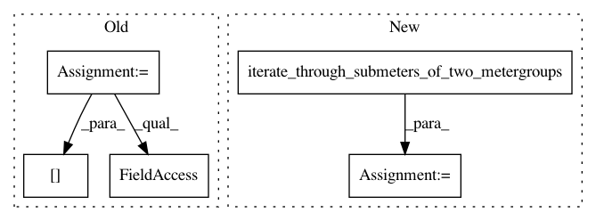

1176c52ed5a1277a5cb979ae453bb951d1ea9116,nilmtk/metrics.py,,error_in_assigned_energy,#Any#Any#,34
Before Change
errors = {}
for meter in predictions.submeters():
ground_truth_meter_identifier = meter.identifier._replace(
dataset=ground_truth.dataset())
ground_truth_meter = ground_truth[ground_truth_meter_identifier]
sections = meter.good_sections()
ground_truth_energy = ground_truth_meter.total_energy(periods=sections)
predicted_energy = meter.total_energy(periods=sections)
After Change
in kWh.
errors = {}
both_meters = iterate_through_submeters_of_two_metergroups(predictions,
ground_truth)
for pred_meter, ground_truth_meter in both_meters:
sections = pred_meter.good_sections()
ground_truth_energy = ground_truth_meter.total_energy(periods=sections)
predicted_energy = pred_meter.total_energy(periods=sections)
errors[pred_meter.instance()] = np.abs(ground_truth_energy - predicted_energy)
return pd.Series(errors)
def fraction_energy_assigned_correctly(predictions, ground_truth):
In pattern: SUPERPATTERN
Frequency: 3
Non-data size: 5
Instances
Project Name: nilmtk/nilmtk
Commit Name: 1176c52ed5a1277a5cb979ae453bb951d1ea9116
Time: 2014-07-10
Author: jack-list@xlk.org.uk
File Name: nilmtk/metrics.py
Class Name:
Method Name: error_in_assigned_energy
Project Name: nilmtk/nilmtk
Commit Name: 9ce99b87ced85d30b755c4bf8e94b1d592b963bd
Time: 2014-07-10
Author: jack-list@xlk.org.uk
File Name: nilmtk/metrics.py
Class Name:
Method Name: rms_error_power
Project Name: nilmtk/nilmtk
Commit Name: 1176c52ed5a1277a5cb979ae453bb951d1ea9116
Time: 2014-07-10
Author: jack-list@xlk.org.uk
File Name: nilmtk/metrics.py
Class Name:
Method Name: mean_normalized_error_power